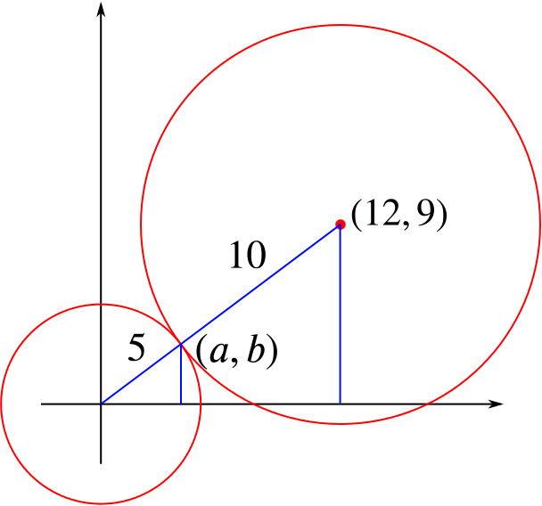

Alternatively, we can notice that 9 and 12 form the two short sides of right-angled triangle, which must be a 3-4-5 triangle scaled by a factor of 3, and therefore the diagonal length is 3×5=15.
Now the radii of the two circles are 5 and 10. Since 5+10=15 (the distance between the centres), the two circles touch.
To find the coordinates of the point where they touch, we can use similar triangles:

The small triangle has sides in the ratio a:b:5 (base to height to hypotenuse), while in the large triangle, they are in the ratio 12:9:15. These ratios are the same, so a:b:5=4:3:5, and the point of touching has coordinates (4,3).
Another way to think about this is that the point of touching is 515=13 of the way along the line from (0,0) to (12,9), so it is at (4,3).
Approach 2: Algebraic
For the circles to touch, we must show that they intersect at exactly one point.
We have the equations of the two circles:
x2+y2=25
and
x2+y2−24x−18y+125=0.
Substituting the first equation into the second (or alternatively subtracting the first equation from the second) gives
⟹⟹25−24x−18y+125=024x+18y=1504x+3y=25.
So if the two circles meet in two points, they must both lie on 4x+3y=25.